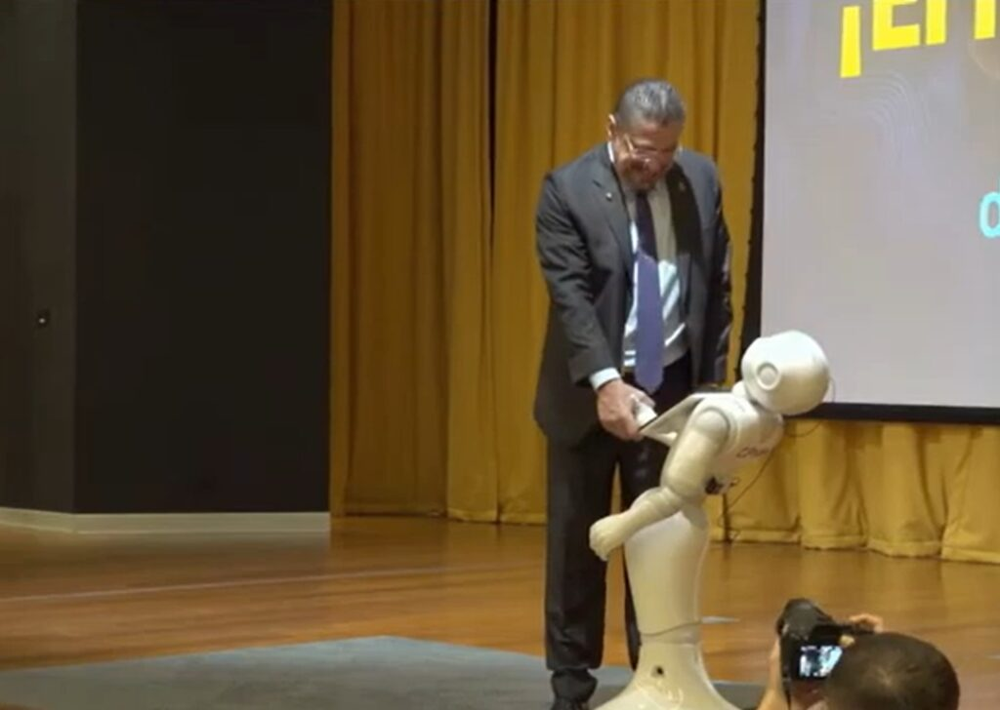

Sucesos
Costa Rica inaugura Centro Nacional de Inteligencia Artificial para impulsar la tecnología
San José, 17 de noviembre de 2024
Costa Rica ha lanzado el Centro Nacional de Inteligencia Artificial (CENIA) en el Parque Tecnológico de Cartago, con el fin de liderar en investigación y desarrollo en IA, aprendizaje automático y robótica. En colaboración con universidades y empresas privadas, el centro busca formar profesionales en ingeniería y programación, beneficiando sectores como salud, agricultura y educación. La ministra de Ciencia, Paula Bogantes, destacó que el CENIA es clave para la transformación digital del país y la atracción de inversión tecnológica en la región.